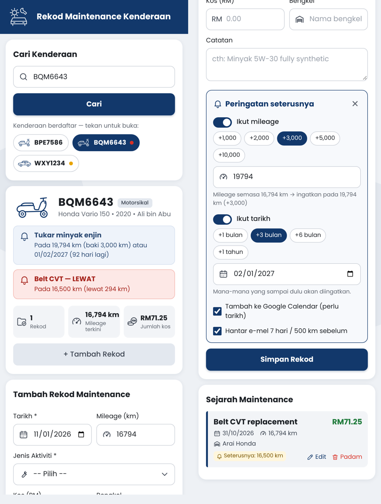

Rekod servis, isian minyak & cas EV untuk motosikal dan kereta anda. Dapatkan peringatan sebelum tiba masa servis, cukai jalan dan insurans, serta pantau kuota BUDI MADANI. Percuma, dan data disimpan dalam Google Drive anda sendiri.
Semua yang anda perlukan untuk jaga kenderaan — tanpa buku log atau resit yang hilang.
Motosikal, kereta & EV dengan 15 pilihan ikon. Cari terus ikut nombor plat.
Tarikh, mileage, kos, bengkel, catatan & gambar resit — semua di satu tempat.
RON95, RON97, Diesel & EV (kWh). Kira km/L, L/100km dan kos setiap km secara automatik.
Pantau baki kuota RON95 & Diesel bersubsidi setiap bulan, dengan amaran bila hampir habis.
Ikut mileage atau tarikh. Notifikasi Google Calendar & e-mel sebelum tiba masanya.
Amaran 30 & 7 hari sebelum tamat, supaya tak terlepas.
Perbelanjaan bulanan servis & minyak, pecahan ikut aktiviti dan kos setiap kilometer.
Sejarah servis & minyak yang kemas — berguna bila menjual kenderaan.
Suami, isteri atau anak boleh rekod untuk kenderaan yang sama.
Bahasa Melayu, English, 中文 dan தமிழ் — termasuk PDF dan e-mel peringatan.
Pilih aktiviti, selang servis seterusnya terus diisi.
Direka untuk telefon. Tambah ke Skrin Utama macam app biasa.

Ambil masa kira-kira 1 minit.
Di telefon atau komputer. Di komputer, anda juga boleh imbas kod QR di atas dengan telefon.
Pilih akaun Gmail yang anda mahu gunakan. Data kenderaan anda akan disimpan dalam Google Drive akaun ini.
Ini normal untuk app percuma yang dibina sendiri dan belum melalui proses semakan Google. Untuk teruskan:
Perkataan “unsafe” hanya bermaksud app belum disemak oleh Google. Kod sumber app ini terbuka untuk dilihat di GitHub.
App memerlukan kebenaran ini untuk berfungsi:
Daftar kenderaan pertama anda dengan menaip nombor plat. Tip: buka halaman pasang di telefon dan pilih Add to Home Screen untuk ikon app di skrin utama.
Ringkasnya: data anda kekal milik anda.
Dalam Google Sheet bernama Rekod Maintenance Kenderaan di Google Drive akaun anda sendiri, dicipta automatik kali pertama anda buka app. Gambar resit disimpan dalam folder Resit Maintenance Kenderaan di Drive anda.
Tidak. App berjalan menggunakan akaun anda sendiri, dan tiada data dihantar ke pelayan pembangun atau pihak ketiga.
drive.file: hanya fail yang dicipta oleh app ini.Baki kuota dalam app ialah anggaran daripada isian yang anda rekod. App tidak berhubung dengan sistem kerajaan — semak baki rasmi di portal BUDI MADANI.
Jika anda kongsi garaj dengan ahli keluarga, mereka diberi akses edit pada Sheet garaj anda dan boleh melihat resit. Anda boleh buang akses mereka bila-bila masa dari bahagian Garaj & Perkongsian dalam app.
Tarik balik kebenaran di myaccount.google.com/permissions. Sheet & folder resit kekal dalam Drive anda — padam sendiri jika tidak diperlukan lagi.
Soalan atau laporan masalah: buka isu di GitHub.